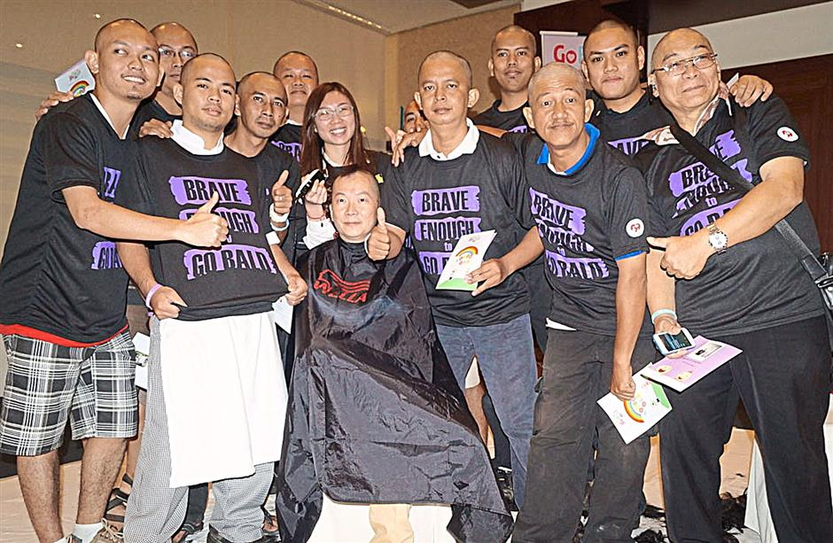

I will be using a short story called A Powerful Story I found online to apply the elements I just learned.

A man and a young teenage boy checked into a hotel and were shown to their room. The receptionist noted the quiet manner of the guests and the pale appearance of the boy. Later, the man and boy ate dinner in the hotel restaurant.
The staff again noticed that the two guests were very quiet and that the boy seemed disinterested in his food.
After eating, the boy went to his room and the man went to ask the receptionist to see the manager. The receptionist initially asked if there was a problem with the service or the room, and offered to fix things, but the man said that there was no problem of the sort and repeated his request.
When the manager appeared, he took him aside and explained that he was spending the night in the hotel with his fourteen-year-old son, who was seriously ill, probably terminally so. The boy was very soon to undergo therapy, which would cause him to lose his hair. They had come to the hotel to have a break together and also because the boy planned to shave his head, that night, rather than feel that the illness was beating him. The father said that he would be shaving his own head too, in support of his son.
He asked that staff be respectful when the two of them came to breakfast with their shaved heads.
The manager assured the father that he would inform all staff and that they would behave appropriately.
The following morning the father and son entered the restaurant for breakfast. There they saw the four male restaurant staff attending to their duties, perfectly normally, all with shaved heads.
No matter what business you are in, you can help people and you can make a difference.